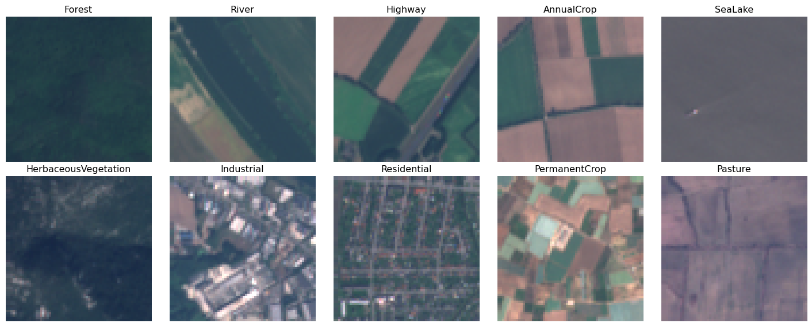
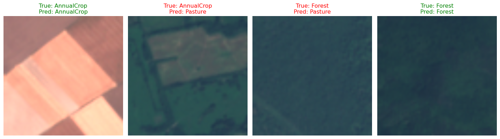
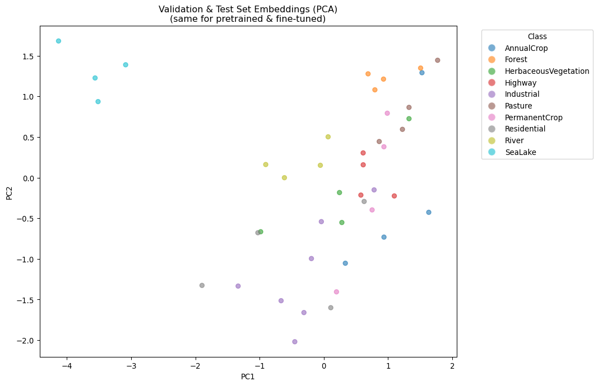

import os
import pathlib
import torch
import logging
import warnings
# Suppress PIL warnings about multi-band TIFFs (common with satellite imagery)
logging.getLogger('PIL.TiffImagePlugin').setLevel(logging.CRITICAL)
# Suppress other common warnings
warnings.filterwarnings('ignore', category=UserWarning)
# Specify where you want model weights/datasets to be saved
DATA_PATH = '/Users/kellycaylor/dev/geoAI/data'TerraTorch is a package that allows you to easily use and fine tune geospatial foundation models (GeoFMs). This tutorial walks through how to get started with TerraTorch to fine tune a GeoFM on your own data and task, whatever that may be.
Achieving fine tuning and inference using TerraTorch can be achieved in five steps:
- Organize your data: Make sure your inputs, labels, and splits are organized in a standardized way that TerraTorch generic DataModules can interpret
- Set up your DataModule: Use TerraTorch generic DataModules to create an object which reads in your data, makes any necessary adjustments, and passes it to your model in the format it expects for training.
- Set up your Task: Identify your chosen task, choose your model and define hyperparameters
- Train your model: Use PyTorch Lightning to handle training and logging for a set number of epochs.
- Run inference: Once training is complete, use your fine-tuned model to make predictions on new data and inspect embeddings.
In this demo, we will show how to fine tune Prithvi on a subset of the EuroSAT benchmark, which classifies 64x64 pixel Sentinel 2 L1C images into one of 10 classes. The demo is written in a general way to help users adapt this code to their specific use case.
Step 0: Setup
HuggingFace cache
Because we are on a shared server with shared conda environment, we need to reorient where huggingface downloads things like model weights and datasets
# Set up environment variables that are used by HuggingFace
os.environ["HF_HOME"] = os.path.join(DATA_PATH, "hfhome")
os.environ["HF_HUB_CACHE"] = os.path.join(DATA_PATH, "hub")
os.environ["HF_DATASETS_CACHE"] = os.path.join(DATA_PATH, "datasets")
os.environ["TRANSFORMERS_CACHE"] = os.path.join(DATA_PATH, "transformers")Step 1: Get your data in the right format for TerraTorch
TerraTorch makes your life easier if you organize your data in standard ways. Specifically, following these conventions will allow you to use their generic DataModules and save your the trouble of writing your own.
File organization
- Classification: Organize your images into different folders depending on their class (this is how EuroSAT is organized). Alternatively, have a metadata file listing
- Segmentation/regression: Have images and their labels (masks or continuous outputs) have the same name but followed by an image vs. mask or label identifier (e.g. image:
Im_1_img.tifandIm_1_mask.tif
EuroSAT classification example
We can retrieve a subsample of the EuroSAT dataset using torchgeo. Luckily, we will show it is already in the format TerraTorch expects for a classification task.
from torchgeo.datasets import EuroSAT100 # 100 image subset from EuroSAT
EuroSAT100(
root=DATA_PATH, # make sure you have defined the path where you want data saved
split='train',
download=True,
)
EuroSAT100(
root=DATA_PATH,
split='val',
download=True,
)
EuroSAT100(
root=DATA_PATH,
split='test',
download=True,
)Dataset EuroSAT100
Number of datapoints: 20
Root location: /Users/kellycaylor/dev/geoAI/data/ds/images/remote_sensing/otherDatasets/sentinel_2/tifWhen opening inspecting the downloaded dataset, you will find that the data will be stored at the following path:
# Define the location of the saved EUROSAT data
EUROSAT = DATA_PATH + "/ds/images/remote_sensing/otherDatasets/sentinel_2/tif/"There is one folder for each class, each containing .tif files with the images to be classified.
# List the folders each containing images for a given EuroSAT class
from pathlib import Path
class_paths = [item for item in Path(EUROSAT).iterdir()]
class_names = [item.name for item in class_paths]
print(class_names)['Forest', 'River', 'Highway', 'AnnualCrop', 'SeaLake', 'HerbaceousVegetation', 'Industrial', 'Residential', 'PermanentCrop', 'Pasture']Specify splits
To specify which images belong to which split, you have two options:
- provide
.txtfiles that have the names of the images in each split in them - organize the splits into different folders
EuroSAT example
In the case of EuroSAT, the names of the images belonging to each split are saved as .txt files.
# Save the paths to each split for use in the DataModule setup
TRAIN_SPLIT = DATA_PATH + '/eurosat-100-train.txt'
VAL_SPLIT = DATA_PATH + '/eurosat-100-val.txt'
TEST_SPLIT = DATA_PATH + '/eurosat-100-test.txt'Step 2: Get your DataModule set up
Inspect your data
It is important to have a good grasp of the contents of your data in order to set up the DataModule properly. It can therefore be useful to do a bit of exploration and visualization.
# Read in the first image in each class for inspection
import rasterio
import numpy as np
import matplotlib.pyplot as plt
from pathlib import Path
# get the first image in each class
image_sample = [next(folder.iterdir()) for folder in class_paths] # list of 10 images
# read all 10 sample images
ims = [rasterio.open(image).read() for image in image_sample]Image statistics
By inspecting the first image, we find that we have 13 bands per image (corresponding to the 13 Sentinel-2 L1C bands) and images are 64x64 pixels. Neither of these is what Prithvi expects, so it’s important to know this so we can adjust it in the DataLoader.
We also note that the units are in reflectance values.
# print some statistics for the first image
print("Shape:", ims[1].shape)
print("Means by band:", ims[1].mean(axis=(1,2)))
print("Stds by band:", ims[1].std(axis=(1,2)))Shape: (13, 64, 64)
Means by band: [1288.97705078 1025.03173828 944.13305664 725.19604492 888.26782227
1701.43383789 2149.0300293 2014.53515625 424.36669922 8.78369141
1140.24414062 637.13842773 2281.08129883]
Stds by band: [ 50.77284027 110.01204421 197.95281388 304.08487263 371.85495521
836.55788254 1173.53766023 1202.2317915 191.06255061 1.39687418
787.56197144 505.03331818 1318.82967564]Visualization
def to_rgb(img, bands=[3,2,1]):
# select the r,g,b bands
rgb = img[bands].astype(float)
# Follow EuroSAT guidelines for visualization
# clip to a max of 2750
# normalize to 0-1
rgb = np.clip(rgb, 0, 2750) / 2750
# go from (CxWxH) to (WxHxC)
rgb = np.transpose(rgb, (1,2,0))
return rgb
fig, axes = plt.subplots(2, 5, figsize=(15, 6))
axes = axes.ravel()
for i, (ax, img, name) in enumerate(zip(axes, ims, class_names)):
rgb = to_rgb(img)
ax.imshow(rgb)
ax.set_title(name)
ax.axis("off")
plt.tight_layout()
plt.show()
Define bands, statistics, and transforms
There are a few important parameters we will need to define when setting up our DataModule in addition to the location of the data and splits that we defined in Step 1.
We specifically use the GenericNonGeoClassificationDataModule, though all generic DataModules will need these inputs. You can always learn more about the arguments for a given DataModule by adapting the following code:
from terratorch.datamodules import GenericNonGeoClassificationDataModule
?GenericNonGeoClassificationDataModuleBand names
We need to tell the datamodule which bands we actually want to go into the model.
In our case, we have 13 sentinel 2 bands, but Prithvi is trained on 6 landsay bands, so we need to subset them.
sentinel2_bands = [
"B1", "B2", "B3", "B4", "B5", "B6", "B7",
"B8", "B8A", "B9", "B10", "B11", "B12"
]
# The subset of our bands Prithvi will take
prithvi_subset = [1, 2, 3, 8, 11, 12]
prithvi_bands = [sentinel2_bands[i] for i in prithvi_subset]
print(prithvi_bands)['B2', 'B3', 'B4', 'B8A', 'B11', 'B12']Means and standard deviations
We need band-level means and standard deviations. Either compute them yourself over your entire dataset, or get general numbers that work well for your data type.
We have S2 L1C data. We can use TerraMesh statistics I grabbed from their huggingface: https://huggingface.co/api/resolve-cache/datasets/ibm-esa-geospatial/TerraMesh/6c548cdacdd70e98a236de9f5b708d4b9dadf253/terramesh.py
statistics = {
"mean": {
"S2L1C": [2357.090, 2137.398, 2018.799, 2082.998, 2295.663, 2854.548, 3122.860, 3040.571, 3306.491, 1473.849,
506.072, 2472.840, 1838.943],
"S2L2A": [1390.461, 1503.332, 1718.211, 1853.926, 2199.116, 2779.989, 2987.025, 3083.248, 3132.235, 3162.989,
2424.902, 1857.665],
"S2RGB": [110.349, 99.507, 75.843],
"S1GRD": [-12.577, -20.265],
"S1RTC": [-10.93, -17.329],
"NDVI": [0.327],
"DEM": [651.663],
},
"std": {
"S2L1C": [1673.639, 1722.641, 1602.205, 1873.138, 1866.055, 1779.839, 1776.496, 1724.114, 1771.041, 1079.786,
512.404, 1340.879, 1172.435],
"S2L2A": [2131.157, 2163.666, 2059.311, 2152.477, 2105.179, 1912.773, 1842.326, 1893.568, 1775.656, 1814.907,
1436.282, 1336.155],
"S2RGB": [69.905, 53.708, 53.378],
"S1GRD": [5.179, 5.872],
"S1RTC": [4.391, 4.459],
"NDVI": [0.322],
"DEM": [928.168]
}
}We specifically need to pass Sentinel 2 L1C means and stds, but only for the 6 bands we are subsetting for input into prithvi.
S2L1C_prithvi_means = [statistics["mean"]["S2L1C"][i] for i in prithvi_subset]
S2L1C_prithvi_stds = [statistics["std"]["S2L1C"][i] for i in prithvi_subset]
print(S2L1C_prithvi_means)
print(S2L1C_prithvi_stds)[2137.398, 2018.799, 2082.998, 3306.491, 2472.84, 1838.943]
[1722.641, 1602.205, 1873.138, 1771.041, 1340.879, 1172.435]Transforms
Transforms allow you to make changes to your data on the fly before feeding them to a model for training. There are three important types of transforms:
- Reshaping/resizing/clipping: To get your data into the shape your model expects.
- Data augmentations: If you don’t have a lot of training data, you can “augment” your dataset by presenting changed versions of your images to the model. For example, flip your images. This type of transform generally should only happen to your training data, and not your validation and testing data.
- Make your image a tensor (the data format that GPUs can use)
We can use albumentations to do any of these.
import albumentations
train_transforms = albumentations.Compose([
albumentations.Resize(224, 224), # go from 64x64 to 224x224 (Prithvi expected size)
albumentations.HorizontalFlip(), # augmentation
albumentations.pytorch.transforms.ToTensorV2(),
])
# Same transforms but without augmentations for validation and testing
val_test_transforms = albumentations.Compose([
albumentations.Resize(224, 224),
albumentations.pytorch.transforms.ToTensorV2(),
])Define your DataModule
from terratorch.datamodules import GenericNonGeoClassificationDataModule
datamodule = GenericNonGeoClassificationDataModule(
batch_size=16, # How many images to give the model at once. More = faster, but more RAM is needed
num_workers=0, # extra CPU threads for image loading
# Where is our data? In our case, all splits are in the same folder
train_data_root=EUROSAT,
val_data_root=EUROSAT,
test_data_root=EUROSAT,
# Because images for all splits are in the same place, we need to specify our split files
train_split=TRAIN_SPLIT,
val_split=VAL_SPLIT,
test_split=TEST_SPLIT,
# means and standard deviations for the bands being input into the model
means=S2L1C_prithvi_means,
stds=S2L1C_prithvi_stds,
# number of classes
num_classes=len(class_names),
# Tranforms, defined using albumentations
train_transform=train_transforms,
val_transform=val_test_transforms,
test_transform=val_test_transforms,
# Bands of our dataset
dataset_bands=sentinel2_bands,
# Bands to input into our model
output_bands=prithvi_bands,
)
datamodule.setup("fit")Check your DataModule
To ensure that the data are as we would expect the model to find them, we can manually iterate through a batch of the datamodule to inspect it.
batch = next(iter(datamodule.train_dataloader()))print(f"Batch keys: {batch.keys()}")
print(f"Image shape: {batch['image'].shape}")
print(
f"Label shape: {batch['label'].shape if 'label' in batch else batch['labels'].shape}")
# Check the actual values
print(f"\nImage dtype: {batch['image'].dtype}")
print(f"Image min/max: {batch['image'].min()}, {batch['image'].max()}")
print(f"Labels: {batch['label'] if 'label' in batch else batch['labels']}")Batch keys: dict_keys(['image', 'label', 'filename'])
Image shape: torch.Size([16, 6, 224, 224])
Label shape: torch.Size([16])
Image dtype: torch.float32
Image min/max: 51.14285659790039, 18198.3671875
Labels: tensor([4, 8, 3, 7, 0, 6, 1, 7, 0, 2, 7, 5, 0, 3, 0, 8])As expected, we have 16 images with 6 bands and resized to the width and height the model expects.
Notice the min and max have not been normalized. This is because normalization occurs during every training and validation step, which happens below.
Step 3: Get your Task set up
TerraTorch has several Lightning Trainers to easily handle model training, and has Tasks defined for each major task type. We will be using the ClassificationTask.
These Tasks are where you can define your model choice and model hyperparameters.
Choose your model from the model factory
If you don’t know which model you would like to use, you can explore what is available in TerraTorch’s model factory.
Explore encoders
from terratorch.registry import BACKBONE_REGISTRY
# List all the available backbones from different sources
for name, source in BACKBONE_REGISTRY._sources.items():
print(f"\n===={name}=====")
print(list(source))
====terratorch=====
['dofa_small_patch16_224', 'dofa_base_patch16_224', 'dofa_large_patch16_224', 'prithvi_eo_tiny', 'prithvi_eo_v1_100', 'prithvi_eo_v2_tiny_tl', 'prithvi_eo_v2_100_tl', 'prithvi_eo_v2_300', 'prithvi_eo_v2_600', 'prithvi_eo_v2_300_tl', 'prithvi_eo_v2_600_tl', 'terramind_v1_base', 'terramind_v1_base_tim', 'terramind_v01_base', 'terramind_v01_base_tim', 'terramind_v1_large', 'terramind_v1_large_tim', 'terramind_v1_tiny', 'terramind_v1_tiny_tim', 'terramind_v1_small', 'terramind_v1_small_tim', 'terramind_v1_tokenizer_s2l2a', 'terramind_v1_tokenizer_s1rtc', 'terramind_v1_tokenizer_s1grd', 'terramind_v1_tokenizer_dem', 'terramind_v1_tokenizer_lulc', 'terramind_v1_tokenizer_ndvi', 'ssl4eol_resnet18_landsat_tm_toa_moco', 'ssl4eol_resnet18_landsat_tm_toa_simclr', 'ssl4eol_resnet18_landsat_etm_toa_moco', 'ssl4eol_resnet18_landsat_etm_toa_simclr', 'ssl4eol_resnet18_landsat_etm_sr_moco', 'ssl4eol_resnet18_landsat_etm_sr_simclr', 'ssl4eol_resnet18_landsat_oli_tirs_toa_moco', 'ssl4eol_resnet18_landsat_oli_tirs_toa_simclr', 'ssl4eol_resnet18_landsat_oli_sr_moco', 'ssl4eol_resnet18_landsat_oli_sr_simclr', 'ssl4eos12_resnet18_sentinel2_all_moco', 'ssl4eos12_resnet18_sentinel2_rgb_moco', 'seco_resnet18_sentinel2_rgb_seco', 'fmow_resnet50_fmow_rgb_gassl', 'ssl4eol_resnet50_landsat_tm_toa_moco', 'ssl4eol_resnet50_landsat_tm_toa_simclr', 'ssl4eol_resnet50_landsat_etm_toa_moco', 'ssl4eol_resnet50_landsat_etm_toa_simclr', 'ssl4eol_resnet50_landsat_etm_sr_moco', 'ssl4eol_resnet50_landsat_etm_sr_simclr', 'ssl4eol_resnet50_landsat_oli_tirs_toa_moco', 'ssl4eol_resnet50_landsat_oli_tirs_toa_simclr', 'ssl4eol_resnet50_landsat_oli_sr_moco', 'ssl4eol_resnet50_landsat_oli_sr_simclr', 'ssl4eos12_resnet50_sentinel1_all_decur', 'ssl4eos12_resnet50_sentinel1_all_moco', 'ssl4eos12_resnet50_sentinel2_all_decur', 'ssl4eos12_resnet50_sentinel2_all_dino', 'ssl4eos12_resnet50_sentinel2_all_moco', 'ssl4eos12_resnet50_sentinel2_rgb_moco', 'seco_resnet50_sentinel2_rgb_seco', 'satlas_resnet50_sentinel2_mi_ms_satlas', 'satlas_resnet50_sentinel2_mi_rgb_satlas', 'satlas_resnet50_sentinel2_si_ms_satlas', 'satlas_resnet50_sentinel2_si_rgb_satlas', 'satlas_resnet152_sentinel2_mi_ms', 'satlas_resnet152_sentinel2_mi_rgb', 'satlas_resnet152_sentinel2_si_ms_satlas', 'satlas_resnet152_sentinel2_si_rgb_satlas', 'satlas_swin_t_sentinel2_mi_ms', 'satlas_swin_t_sentinel2_mi_rgb', 'satlas_swin_t_sentinel2_si_ms', 'satlas_swin_t_sentinel2_si_rgb', 'satlas_swin_b_sentinel2_mi_ms', 'satlas_swin_b_sentinel2_mi_rgb', 'satlas_swin_b_sentinel2_si_ms', 'satlas_swin_b_sentinel2_si_rgb', 'satlas_swin_b_naip_mi_rgb', 'satlas_swin_b_naip_si_rgb', 'satlas_swin_b_landsat_mi_ms', 'satlas_swin_b_landsat_mi_rgb', 'satlas_swin_b_sentinel1_mi', 'satlas_swin_b_sentinel1_si', 'ssl4eol_vit_small_patch16_224_landsat_tm_toa_moco', 'ssl4eol_vit_small_patch16_224_landsat_tm_toa_simclr', 'ssl4eol_vit_small_patch16_224_landsat_etm_toa_moco', 'ssl4eol_vit_small_patch16_224_landsat_etm_toa_simclr', 'ssl4eol_vit_small_patch16_224_landsat_etm_sr_moco', 'ssl4eol_vit_small_patch16_224_landsat_etm_sr_simclr', 'ssl4eol_vit_small_patch16_224_landsat_oli_tirs_toa_simclr', 'ssl4eol_vit_small_patch16_224_landsat_oli_sr_moco', 'ssl4eol_vit_small_patch16_224_landsat_oli_sr_simclr', 'ssl4eos12_vit_small_patch16_224_sentinel2_all_dino', 'ssl4eos12_vit_small_patch16_224_sentinel2_all_moco', 'UNet']
====timm=====
['aimv2_1b_patch14_224', 'aimv2_1b_patch14_336', 'aimv2_1b_patch14_448', 'aimv2_3b_patch14_224', 'aimv2_3b_patch14_336', 'aimv2_3b_patch14_448', 'aimv2_huge_patch14_224', 'aimv2_huge_patch14_336', 'aimv2_huge_patch14_448', 'aimv2_large_patch14_224', 'aimv2_large_patch14_336', 'aimv2_large_patch14_448', 'bat_resnext26ts', 'beit3_base_patch16_224', 'beit3_giant_patch14_224', 'beit3_giant_patch14_336', 'beit3_large_patch16_224', 'beit_base_patch16_224', 'beit_base_patch16_384', 'beit_large_patch16_224', 'beit_large_patch16_384', 'beit_large_patch16_512', 'beitv2_base_patch16_224', 'beitv2_large_patch16_224', 'botnet26t_256', 'botnet50ts_256', 'caformer_b36', 'caformer_m36', 'caformer_s18', 'caformer_s36', 'cait_m36_384', 'cait_m48_448', 'cait_s24_224', 'cait_s24_384', 'cait_s36_384', 'cait_xs24_384', 'cait_xxs24_224', 'cait_xxs24_384', 'cait_xxs36_224', 'cait_xxs36_384', 'clay_v1_base', 'coat_lite_medium', 'coat_lite_medium_384', 'coat_lite_mini', 'coat_lite_small', 'coat_lite_tiny', 'coat_mini', 'coat_small', 'coat_tiny', 'coatnet_0_224', 'coatnet_0_rw_224', 'coatnet_1_224', 'coatnet_1_rw_224', 'coatnet_2_224', 'coatnet_2_rw_224', 'coatnet_3_224', 'coatnet_3_rw_224', 'coatnet_4_224', 'coatnet_5_224', 'coatnet_bn_0_rw_224', 'coatnet_nano_cc_224', 'coatnet_nano_rw_224', 'coatnet_pico_rw_224', 'coatnet_rmlp_0_rw_224', 'coatnet_rmlp_1_rw2_224', 'coatnet_rmlp_1_rw_224', 'coatnet_rmlp_2_rw_224', 'coatnet_rmlp_2_rw_384', 'coatnet_rmlp_3_rw_224', 'coatnet_rmlp_nano_rw_224', 'coatnext_nano_rw_224', 'convformer_b36', 'convformer_m36', 'convformer_s18', 'convformer_s36', 'convit_base', 'convit_small', 'convit_tiny', 'convmixer_768_32', 'convmixer_1024_20_ks9_p14', 'convmixer_1536_20', 'convnext_atto', 'convnext_atto_ols', 'convnext_atto_rms', 'convnext_base', 'convnext_femto', 'convnext_femto_ols', 'convnext_large', 'convnext_large_mlp', 'convnext_nano', 'convnext_nano_ols', 'convnext_pico', 'convnext_pico_ols', 'convnext_small', 'convnext_tiny', 'convnext_tiny_hnf', 'convnext_xlarge', 'convnext_xxlarge', 'convnext_zepto_rms', 'convnext_zepto_rms_ols', 'convnextv2_atto', 'convnextv2_base', 'convnextv2_femto', 'convnextv2_huge', 'convnextv2_large', 'convnextv2_nano', 'convnextv2_pico', 'convnextv2_small', 'convnextv2_tiny', 'crossvit_9_240', 'crossvit_9_dagger_240', 'crossvit_15_240', 'crossvit_15_dagger_240', 'crossvit_15_dagger_408', 'crossvit_18_240', 'crossvit_18_dagger_240', 'crossvit_18_dagger_408', 'crossvit_base_240', 'crossvit_small_240', 'crossvit_tiny_240', 'cs3darknet_focus_l', 'cs3darknet_focus_m', 'cs3darknet_focus_s', 'cs3darknet_focus_x', 'cs3darknet_l', 'cs3darknet_m', 'cs3darknet_s', 'cs3darknet_x', 'cs3edgenet_x', 'cs3se_edgenet_x', 'cs3sedarknet_l', 'cs3sedarknet_x', 'cs3sedarknet_xdw', 'cspdarknet53', 'cspresnet50', 'cspresnet50d', 'cspresnet50w', 'cspresnext50', 'darknet17', 'darknet21', 'darknet53', 'darknetaa53', 'davit_base', 'davit_base_fl', 'davit_giant', 'davit_huge', 'davit_huge_fl', 'davit_large', 'davit_small', 'davit_tiny', 'deit3_base_patch16_224', 'deit3_base_patch16_384', 'deit3_huge_patch14_224', 'deit3_large_patch16_224', 'deit3_large_patch16_384', 'deit3_medium_patch16_224', 'deit3_small_patch16_224', 'deit3_small_patch16_384', 'deit_base_distilled_patch16_224', 'deit_base_distilled_patch16_384', 'deit_base_patch16_224', 'deit_base_patch16_384', 'deit_small_distilled_patch16_224', 'deit_small_patch16_224', 'deit_tiny_distilled_patch16_224', 'deit_tiny_patch16_224', 'densenet121', 'densenet161', 'densenet169', 'densenet201', 'densenet264d', 'densenetblur121d', 'dla34', 'dla46_c', 'dla46x_c', 'dla60', 'dla60_res2net', 'dla60_res2next', 'dla60x', 'dla60x_c', 'dla102', 'dla102x', 'dla102x2', 'dla169', 'dm_nfnet_f0', 'dm_nfnet_f1', 'dm_nfnet_f2', 'dm_nfnet_f3', 'dm_nfnet_f4', 'dm_nfnet_f5', 'dm_nfnet_f6', 'dpn48b', 'dpn68', 'dpn68b', 'dpn92', 'dpn98', 'dpn107', 'dpn131', 'eca_botnext26ts_256', 'eca_halonext26ts', 'eca_nfnet_l0', 'eca_nfnet_l1', 'eca_nfnet_l2', 'eca_nfnet_l3', 'eca_resnet33ts', 'eca_resnext26ts', 'eca_vovnet39b', 'ecaresnet26t', 'ecaresnet50d', 'ecaresnet50d_pruned', 'ecaresnet50t', 'ecaresnet101d', 'ecaresnet101d_pruned', 'ecaresnet200d', 'ecaresnet269d', 'ecaresnetlight', 'ecaresnext26t_32x4d', 'ecaresnext50t_32x4d', 'edgenext_base', 'edgenext_small', 'edgenext_small_rw', 'edgenext_x_small', 'edgenext_xx_small', 'efficientformer_l1', 'efficientformer_l3', 'efficientformer_l7', 'efficientformerv2_l', 'efficientformerv2_s0', 'efficientformerv2_s1', 'efficientformerv2_s2', 'efficientnet_b0', 'efficientnet_b0_g8_gn', 'efficientnet_b0_g16_evos', 'efficientnet_b0_gn', 'efficientnet_b1', 'efficientnet_b1_pruned', 'efficientnet_b2', 'efficientnet_b2_pruned', 'efficientnet_b3', 'efficientnet_b3_g8_gn', 'efficientnet_b3_gn', 'efficientnet_b3_pruned', 'efficientnet_b4', 'efficientnet_b5', 'efficientnet_b6', 'efficientnet_b7', 'efficientnet_b8', 'efficientnet_blur_b0', 'efficientnet_cc_b0_4e', 'efficientnet_cc_b0_8e', 'efficientnet_cc_b1_8e', 'efficientnet_el', 'efficientnet_el_pruned', 'efficientnet_em', 'efficientnet_es', 'efficientnet_es_pruned', 'efficientnet_h_b5', 'efficientnet_l2', 'efficientnet_lite0', 'efficientnet_lite1', 'efficientnet_lite2', 'efficientnet_lite3', 'efficientnet_lite4', 'efficientnet_x_b3', 'efficientnet_x_b5', 'efficientnetv2_l', 'efficientnetv2_m', 'efficientnetv2_rw_m', 'efficientnetv2_rw_s', 'efficientnetv2_rw_t', 'efficientnetv2_s', 'efficientnetv2_xl', 'efficientvit_b0', 'efficientvit_b1', 'efficientvit_b2', 'efficientvit_b3', 'efficientvit_l1', 'efficientvit_l2', 'efficientvit_l3', 'efficientvit_m0', 'efficientvit_m1', 'efficientvit_m2', 'efficientvit_m3', 'efficientvit_m4', 'efficientvit_m5', 'ese_vovnet19b_dw', 'ese_vovnet19b_slim', 'ese_vovnet19b_slim_dw', 'ese_vovnet39b', 'ese_vovnet39b_evos', 'ese_vovnet57b', 'ese_vovnet99b', 'eva02_base_patch14_224', 'eva02_base_patch14_448', 'eva02_base_patch16_clip_224', 'eva02_enormous_patch14_clip_224', 'eva02_large_patch14_224', 'eva02_large_patch14_448', 'eva02_large_patch14_clip_224', 'eva02_large_patch14_clip_336', 'eva02_small_patch14_224', 'eva02_small_patch14_336', 'eva02_tiny_patch14_224', 'eva02_tiny_patch14_336', 'eva_giant_patch14_224', 'eva_giant_patch14_336', 'eva_giant_patch14_560', 'eva_giant_patch14_clip_224', 'eva_large_patch14_196', 'eva_large_patch14_336', 'fasternet_l', 'fasternet_m', 'fasternet_s', 'fasternet_t0', 'fasternet_t1', 'fasternet_t2', 'fastvit_ma36', 'fastvit_mci0', 'fastvit_mci1', 'fastvit_mci2', 'fastvit_mci3', 'fastvit_mci4', 'fastvit_s12', 'fastvit_sa12', 'fastvit_sa24', 'fastvit_sa36', 'fastvit_t8', 'fastvit_t12', 'fbnetc_100', 'fbnetv3_b', 'fbnetv3_d', 'fbnetv3_g', 'flexivit_base', 'flexivit_large', 'flexivit_small', 'focalnet_base_lrf', 'focalnet_base_srf', 'focalnet_huge_fl3', 'focalnet_huge_fl4', 'focalnet_large_fl3', 'focalnet_large_fl4', 'focalnet_small_lrf', 'focalnet_small_srf', 'focalnet_tiny_lrf', 'focalnet_tiny_srf', 'focalnet_xlarge_fl3', 'focalnet_xlarge_fl4', 'gc_efficientnetv2_rw_t', 'gcresnet33ts', 'gcresnet50t', 'gcresnext26ts', 'gcresnext50ts', 'gcvit_base', 'gcvit_small', 'gcvit_tiny', 'gcvit_xtiny', 'gcvit_xxtiny', 'gernet_l', 'gernet_m', 'gernet_s', 'ghostnet_050', 'ghostnet_100', 'ghostnet_130', 'ghostnetv2_100', 'ghostnetv2_130', 'ghostnetv2_160', 'ghostnetv3_050', 'ghostnetv3_100', 'ghostnetv3_130', 'ghostnetv3_160', 'gmixer_12_224', 'gmixer_24_224', 'gmlp_b16_224', 'gmlp_s16_224', 'gmlp_ti16_224', 'halo2botnet50ts_256', 'halonet26t', 'halonet50ts', 'halonet_h1', 'haloregnetz_b', 'hardcorenas_a', 'hardcorenas_b', 'hardcorenas_c', 'hardcorenas_d', 'hardcorenas_e', 'hardcorenas_f', 'hgnet_base', 'hgnet_small', 'hgnet_tiny', 'hgnetv2_b0', 'hgnetv2_b1', 'hgnetv2_b2', 'hgnetv2_b3', 'hgnetv2_b4', 'hgnetv2_b5', 'hgnetv2_b6', 'hiera_base_224', 'hiera_base_abswin_256', 'hiera_base_plus_224', 'hiera_huge_224', 'hiera_large_224', 'hiera_small_224', 'hiera_small_abswin_256', 'hiera_tiny_224', 'hieradet_small', 'hrnet_w18', 'hrnet_w18_small', 'hrnet_w18_small_v2', 'hrnet_w18_ssld', 'hrnet_w30', 'hrnet_w32', 'hrnet_w40', 'hrnet_w44', 'hrnet_w48', 'hrnet_w48_ssld', 'hrnet_w64', 'inception_next_atto', 'inception_next_base', 'inception_next_small', 'inception_next_tiny', 'inception_resnet_v2', 'inception_v3', 'inception_v4', 'lambda_resnet26rpt_256', 'lambda_resnet26t', 'lambda_resnet50ts', 'lamhalobotnet50ts_256', 'lcnet_035', 'lcnet_050', 'lcnet_075', 'lcnet_100', 'lcnet_150', 'legacy_senet154', 'legacy_seresnet18', 'legacy_seresnet34', 'legacy_seresnet50', 'legacy_seresnet101', 'legacy_seresnet152', 'legacy_seresnext26_32x4d', 'legacy_seresnext50_32x4d', 'legacy_seresnext101_32x4d', 'legacy_xception', 'levit_128', 'levit_128s', 'levit_192', 'levit_256', 'levit_256d', 'levit_384', 'levit_384_s8', 'levit_512', 'levit_512_s8', 'levit_512d', 'levit_conv_128', 'levit_conv_128s', 'levit_conv_192', 'levit_conv_256', 'levit_conv_256d', 'levit_conv_384', 'levit_conv_384_s8', 'levit_conv_512', 'levit_conv_512_s8', 'levit_conv_512d', 'mambaout_base', 'mambaout_base_plus_rw', 'mambaout_base_short_rw', 'mambaout_base_tall_rw', 'mambaout_base_wide_rw', 'mambaout_femto', 'mambaout_kobe', 'mambaout_small', 'mambaout_small_rw', 'mambaout_tiny', 'maxvit_base_tf_224', 'maxvit_base_tf_384', 'maxvit_base_tf_512', 'maxvit_large_tf_224', 'maxvit_large_tf_384', 'maxvit_large_tf_512', 'maxvit_nano_rw_256', 'maxvit_pico_rw_256', 'maxvit_rmlp_base_rw_224', 'maxvit_rmlp_base_rw_384', 'maxvit_rmlp_nano_rw_256', 'maxvit_rmlp_pico_rw_256', 'maxvit_rmlp_small_rw_224', 'maxvit_rmlp_small_rw_256', 'maxvit_rmlp_tiny_rw_256', 'maxvit_small_tf_224', 'maxvit_small_tf_384', 'maxvit_small_tf_512', 'maxvit_tiny_pm_256', 'maxvit_tiny_rw_224', 'maxvit_tiny_rw_256', 'maxvit_tiny_tf_224', 'maxvit_tiny_tf_384', 'maxvit_tiny_tf_512', 'maxvit_xlarge_tf_224', 'maxvit_xlarge_tf_384', 'maxvit_xlarge_tf_512', 'maxxvit_rmlp_nano_rw_256', 'maxxvit_rmlp_small_rw_256', 'maxxvit_rmlp_tiny_rw_256', 'maxxvitv2_nano_rw_256', 'maxxvitv2_rmlp_base_rw_224', 'maxxvitv2_rmlp_base_rw_384', 'maxxvitv2_rmlp_large_rw_224', 'mixer_b16_224', 'mixer_b32_224', 'mixer_l16_224', 'mixer_l32_224', 'mixer_s16_224', 'mixer_s32_224', 'mixnet_l', 'mixnet_m', 'mixnet_s', 'mixnet_xl', 'mixnet_xxl', 'mnasnet_050', 'mnasnet_075', 'mnasnet_100', 'mnasnet_140', 'mnasnet_small', 'mobilenet_edgetpu_100', 'mobilenet_edgetpu_v2_l', 'mobilenet_edgetpu_v2_m', 'mobilenet_edgetpu_v2_s', 'mobilenet_edgetpu_v2_xs', 'mobilenetv1_100', 'mobilenetv1_100h', 'mobilenetv1_125', 'mobilenetv2_035', 'mobilenetv2_050', 'mobilenetv2_075', 'mobilenetv2_100', 'mobilenetv2_110d', 'mobilenetv2_120d', 'mobilenetv2_140', 'mobilenetv3_large_075', 'mobilenetv3_large_100', 'mobilenetv3_large_150d', 'mobilenetv3_rw', 'mobilenetv3_small_050', 'mobilenetv3_small_075', 'mobilenetv3_small_100', 'mobilenetv4_conv_aa_large', 'mobilenetv4_conv_aa_medium', 'mobilenetv4_conv_blur_medium', 'mobilenetv4_conv_large', 'mobilenetv4_conv_medium', 'mobilenetv4_conv_small', 'mobilenetv4_conv_small_035', 'mobilenetv4_conv_small_050', 'mobilenetv4_hybrid_large', 'mobilenetv4_hybrid_large_075', 'mobilenetv4_hybrid_medium', 'mobilenetv4_hybrid_medium_075', 'mobilenetv5_300m', 'mobilenetv5_300m_enc', 'mobilenetv5_base', 'mobileone_s0', 'mobileone_s1', 'mobileone_s2', 'mobileone_s3', 'mobileone_s4', 'mobilevit_s', 'mobilevit_xs', 'mobilevit_xxs', 'mobilevitv2_050', 'mobilevitv2_075', 'mobilevitv2_100', 'mobilevitv2_125', 'mobilevitv2_150', 'mobilevitv2_175', 'mobilevitv2_200', 'mvitv2_base', 'mvitv2_base_cls', 'mvitv2_huge_cls', 'mvitv2_large', 'mvitv2_large_cls', 'mvitv2_small', 'mvitv2_small_cls', 'mvitv2_tiny', 'naflexvit_base_patch16_gap', 'naflexvit_base_patch16_map', 'naflexvit_base_patch16_par_gap', 'naflexvit_base_patch16_parfac_gap', 'naflexvit_base_patch16_siglip', 'naflexvit_so150m2_patch16_reg1_gap', 'naflexvit_so150m2_patch16_reg1_map', 'naflexvit_so400m_patch16_siglip', 'nasnetalarge', 'nest_base', 'nest_base_jx', 'nest_small', 'nest_small_jx', 'nest_tiny', 'nest_tiny_jx', 'nextvit_base', 'nextvit_large', 'nextvit_small', 'nf_ecaresnet26', 'nf_ecaresnet50', 'nf_ecaresnet101', 'nf_regnet_b0', 'nf_regnet_b1', 'nf_regnet_b2', 'nf_regnet_b3', 'nf_regnet_b4', 'nf_regnet_b5', 'nf_resnet26', 'nf_resnet50', 'nf_resnet101', 'nf_seresnet26', 'nf_seresnet50', 'nf_seresnet101', 'nfnet_f0', 'nfnet_f1', 'nfnet_f2', 'nfnet_f3', 'nfnet_f4', 'nfnet_f5', 'nfnet_f6', 'nfnet_f7', 'nfnet_l0', 'pit_b_224', 'pit_b_distilled_224', 'pit_s_224', 'pit_s_distilled_224', 'pit_ti_224', 'pit_ti_distilled_224', 'pit_xs_224', 'pit_xs_distilled_224', 'pnasnet5large', 'poolformer_m36', 'poolformer_m48', 'poolformer_s12', 'poolformer_s24', 'poolformer_s36', 'poolformerv2_m36', 'poolformerv2_m48', 'poolformerv2_s12', 'poolformerv2_s24', 'poolformerv2_s36', 'prithvi_swin_B', 'prithvi_swin_L', 'pvt_v2_b0', 'pvt_v2_b1', 'pvt_v2_b2', 'pvt_v2_b2_li', 'pvt_v2_b3', 'pvt_v2_b4', 'pvt_v2_b5', 'rdnet_base', 'rdnet_large', 'rdnet_small', 'rdnet_tiny', 'regnetv_040', 'regnetv_064', 'regnetx_002', 'regnetx_004', 'regnetx_004_tv', 'regnetx_006', 'regnetx_008', 'regnetx_016', 'regnetx_032', 'regnetx_040', 'regnetx_064', 'regnetx_080', 'regnetx_120', 'regnetx_160', 'regnetx_320', 'regnety_002', 'regnety_004', 'regnety_006', 'regnety_008', 'regnety_008_tv', 'regnety_016', 'regnety_032', 'regnety_040', 'regnety_040_sgn', 'regnety_064', 'regnety_080', 'regnety_080_tv', 'regnety_120', 'regnety_160', 'regnety_320', 'regnety_640', 'regnety_1280', 'regnety_2560', 'regnetz_005', 'regnetz_040', 'regnetz_040_h', 'regnetz_b16', 'regnetz_b16_evos', 'regnetz_c16', 'regnetz_c16_evos', 'regnetz_d8', 'regnetz_d8_evos', 'regnetz_d32', 'regnetz_e8', 'repghostnet_050', 'repghostnet_058', 'repghostnet_080', 'repghostnet_100', 'repghostnet_111', 'repghostnet_130', 'repghostnet_150', 'repghostnet_200', 'repvgg_a0', 'repvgg_a1', 'repvgg_a2', 'repvgg_b0', 'repvgg_b1', 'repvgg_b1g4', 'repvgg_b2', 'repvgg_b2g4', 'repvgg_b3', 'repvgg_b3g4', 'repvgg_d2se', 'repvit_m0_9', 'repvit_m1', 'repvit_m1_0', 'repvit_m1_1', 'repvit_m1_5', 'repvit_m2', 'repvit_m2_3', 'repvit_m3', 'res2net50_14w_8s', 'res2net50_26w_4s', 'res2net50_26w_6s', 'res2net50_26w_8s', 'res2net50_48w_2s', 'res2net50d', 'res2net101_26w_4s', 'res2net101d', 'res2next50', 'resmlp_12_224', 'resmlp_24_224', 'resmlp_36_224', 'resmlp_big_24_224', 'resnest14d', 'resnest26d', 'resnest50d', 'resnest50d_1s4x24d', 'resnest50d_4s2x40d', 'resnest101e', 'resnest200e', 'resnest269e', 'resnet10t', 'resnet14t', 'resnet18', 'resnet18d', 'resnet26', 'resnet26d', 'resnet26t', 'resnet32ts', 'resnet33ts', 'resnet34', 'resnet34d', 'resnet50', 'resnet50_clip', 'resnet50_clip_gap', 'resnet50_gn', 'resnet50_mlp', 'resnet50c', 'resnet50d', 'resnet50s', 'resnet50t', 'resnet50x4_clip', 'resnet50x4_clip_gap', 'resnet50x16_clip', 'resnet50x16_clip_gap', 'resnet50x64_clip', 'resnet50x64_clip_gap', 'resnet51q', 'resnet61q', 'resnet101', 'resnet101_clip', 'resnet101_clip_gap', 'resnet101c', 'resnet101d', 'resnet101s', 'resnet152', 'resnet152c', 'resnet152d', 'resnet152s', 'resnet200', 'resnet200d', 'resnetaa34d', 'resnetaa50', 'resnetaa50d', 'resnetaa101d', 'resnetblur18', 'resnetblur50', 'resnetblur50d', 'resnetblur101d', 'resnetrs50', 'resnetrs101', 'resnetrs152', 'resnetrs200', 'resnetrs270', 'resnetrs350', 'resnetrs420', 'resnetv2_18', 'resnetv2_18d', 'resnetv2_34', 'resnetv2_34d', 'resnetv2_50', 'resnetv2_50d', 'resnetv2_50d_evos', 'resnetv2_50d_frn', 'resnetv2_50d_gn', 'resnetv2_50t', 'resnetv2_50x1_bit', 'resnetv2_50x3_bit', 'resnetv2_101', 'resnetv2_101d', 'resnetv2_101x1_bit', 'resnetv2_101x3_bit', 'resnetv2_152', 'resnetv2_152d', 'resnetv2_152x2_bit', 'resnetv2_152x4_bit', 'resnext26ts', 'resnext50_32x4d', 'resnext50d_32x4d', 'resnext101_32x4d', 'resnext101_32x8d', 'resnext101_32x16d', 'resnext101_32x32d', 'resnext101_64x4d', 'rexnet_100', 'rexnet_130', 'rexnet_150', 'rexnet_200', 'rexnet_300', 'rexnetr_100', 'rexnetr_130', 'rexnetr_150', 'rexnetr_200', 'rexnetr_300', 'sam2_hiera_base_plus', 'sam2_hiera_large', 'sam2_hiera_small', 'sam2_hiera_tiny', 'samvit_base_patch16', 'samvit_base_patch16_224', 'samvit_huge_patch16', 'samvit_large_patch16', 'sebotnet33ts_256', 'sedarknet21', 'sehalonet33ts', 'selecsls42', 'selecsls42b', 'selecsls60', 'selecsls60b', 'selecsls84', 'semnasnet_050', 'semnasnet_075', 'semnasnet_100', 'semnasnet_140', 'senet154', 'sequencer2d_l', 'sequencer2d_m', 'sequencer2d_s', 'seresnet18', 'seresnet33ts', 'seresnet34', 'seresnet50', 'seresnet50t', 'seresnet101', 'seresnet152', 'seresnet152d', 'seresnet200d', 'seresnet269d', 'seresnetaa50d', 'seresnext26d_32x4d', 'seresnext26t_32x4d', 'seresnext26ts', 'seresnext50_32x4d', 'seresnext101_32x4d', 'seresnext101_32x8d', 'seresnext101_64x4d', 'seresnext101d_32x8d', 'seresnextaa101d_32x8d', 'seresnextaa201d_32x8d', 'shvit_s1', 'shvit_s2', 'shvit_s3', 'shvit_s4', 'skresnet18', 'skresnet34', 'skresnet50', 'skresnet50d', 'skresnext50_32x4d', 'spnasnet_100', 'starnet_s1', 'starnet_s2', 'starnet_s3', 'starnet_s4', 'starnet_s050', 'starnet_s100', 'starnet_s150', 'swiftformer_l1', 'swiftformer_l3', 'swiftformer_s', 'swiftformer_xs', 'swin_base_patch4_window7_224', 'swin_base_patch4_window12_384', 'swin_large_patch4_window7_224', 'swin_large_patch4_window12_384', 'swin_s3_base_224', 'swin_s3_small_224', 'swin_s3_tiny_224', 'swin_small_patch4_window7_224', 'swin_tiny_patch4_window7_224', 'swinv2_base_window8_256', 'swinv2_base_window12_192', 'swinv2_base_window12to16_192to256', 'swinv2_base_window12to24_192to384', 'swinv2_base_window16_256', 'swinv2_cr_base_224', 'swinv2_cr_base_384', 'swinv2_cr_base_ns_224', 'swinv2_cr_giant_224', 'swinv2_cr_giant_384', 'swinv2_cr_huge_224', 'swinv2_cr_huge_384', 'swinv2_cr_large_224', 'swinv2_cr_large_384', 'swinv2_cr_small_224', 'swinv2_cr_small_384', 'swinv2_cr_small_ns_224', 'swinv2_cr_small_ns_256', 'swinv2_cr_tiny_224', 'swinv2_cr_tiny_384', 'swinv2_cr_tiny_ns_224', 'swinv2_large_window12_192', 'swinv2_large_window12to16_192to256', 'swinv2_large_window12to24_192to384', 'swinv2_small_window8_256', 'swinv2_small_window16_256', 'swinv2_tiny_window8_256', 'swinv2_tiny_window16_256', 'test_byobnet', 'test_convnext', 'test_convnext2', 'test_convnext3', 'test_efficientnet', 'test_efficientnet_evos', 'test_efficientnet_gn', 'test_efficientnet_ln', 'test_mambaout', 'test_nfnet', 'test_resnet', 'test_vit', 'test_vit2', 'test_vit3', 'test_vit4', 'tf_efficientnet_b0', 'tf_efficientnet_b1', 'tf_efficientnet_b2', 'tf_efficientnet_b3', 'tf_efficientnet_b4', 'tf_efficientnet_b5', 'tf_efficientnet_b6', 'tf_efficientnet_b7', 'tf_efficientnet_b8', 'tf_efficientnet_cc_b0_4e', 'tf_efficientnet_cc_b0_8e', 'tf_efficientnet_cc_b1_8e', 'tf_efficientnet_el', 'tf_efficientnet_em', 'tf_efficientnet_es', 'tf_efficientnet_l2', 'tf_efficientnet_lite0', 'tf_efficientnet_lite1', 'tf_efficientnet_lite2', 'tf_efficientnet_lite3', 'tf_efficientnet_lite4', 'tf_efficientnetv2_b0', 'tf_efficientnetv2_b1', 'tf_efficientnetv2_b2', 'tf_efficientnetv2_b3', 'tf_efficientnetv2_l', 'tf_efficientnetv2_m', 'tf_efficientnetv2_s', 'tf_efficientnetv2_xl', 'tf_mixnet_l', 'tf_mixnet_m', 'tf_mixnet_s', 'tf_mobilenetv3_large_075', 'tf_mobilenetv3_large_100', 'tf_mobilenetv3_large_minimal_100', 'tf_mobilenetv3_small_075', 'tf_mobilenetv3_small_100', 'tf_mobilenetv3_small_minimal_100', 'tiny_vit_5m_224', 'tiny_vit_11m_224', 'tiny_vit_21m_224', 'tiny_vit_21m_384', 'tiny_vit_21m_512', 'tinynet_a', 'tinynet_b', 'tinynet_c', 'tinynet_d', 'tinynet_e', 'tnt_b_patch16_224', 'tnt_s_legacy_patch16_224', 'tnt_s_patch16_224', 'tresnet_l', 'tresnet_m', 'tresnet_v2_l', 'tresnet_xl', 'twins_pcpvt_base', 'twins_pcpvt_large', 'twins_pcpvt_small', 'twins_svt_base', 'twins_svt_large', 'twins_svt_small', 'vgg11', 'vgg11_bn', 'vgg13', 'vgg13_bn', 'vgg16', 'vgg16_bn', 'vgg19', 'vgg19_bn', 'visformer_small', 'visformer_tiny', 'vit_7b_patch16_dinov3', 'vit_base_mci_224', 'vit_base_patch8_224', 'vit_base_patch14_dinov2', 'vit_base_patch14_reg4_dinov2', 'vit_base_patch16_18x2_224', 'vit_base_patch16_224', 'vit_base_patch16_224_miil', 'vit_base_patch16_384', 'vit_base_patch16_clip_224', 'vit_base_patch16_clip_384', 'vit_base_patch16_clip_quickgelu_224', 'vit_base_patch16_dinov3', 'vit_base_patch16_dinov3_qkvb', 'vit_base_patch16_gap_224', 'vit_base_patch16_plus_240', 'vit_base_patch16_plus_clip_240', 'vit_base_patch16_reg4_gap_256', 'vit_base_patch16_rope_224', 'vit_base_patch16_rope_ape_224', 'vit_base_patch16_rope_mixed_224', 'vit_base_patch16_rope_mixed_ape_224', 'vit_base_patch16_rope_reg1_gap_256', 'vit_base_patch16_rpn_224', 'vit_base_patch16_siglip_224', 'vit_base_patch16_siglip_256', 'vit_base_patch16_siglip_384', 'vit_base_patch16_siglip_512', 'vit_base_patch16_siglip_gap_224', 'vit_base_patch16_siglip_gap_256', 'vit_base_patch16_siglip_gap_384', 'vit_base_patch16_siglip_gap_512', 'vit_base_patch16_xp_224', 'vit_base_patch32_224', 'vit_base_patch32_384', 'vit_base_patch32_clip_224', 'vit_base_patch32_clip_256', 'vit_base_patch32_clip_384', 'vit_base_patch32_clip_448', 'vit_base_patch32_clip_quickgelu_224', 'vit_base_patch32_plus_256', 'vit_base_patch32_siglip_256', 'vit_base_patch32_siglip_gap_256', 'vit_base_r26_s32_224', 'vit_base_r50_s16_224', 'vit_base_r50_s16_384', 'vit_base_resnet26d_224', 'vit_base_resnet50d_224', 'vit_betwixt_patch16_gap_256', 'vit_betwixt_patch16_reg1_gap_256', 'vit_betwixt_patch16_reg4_gap_256', 'vit_betwixt_patch16_reg4_gap_384', 'vit_betwixt_patch16_rope_reg4_gap_256', 'vit_betwixt_patch32_clip_224', 'vit_giant_patch14_224', 'vit_giant_patch14_clip_224', 'vit_giant_patch14_dinov2', 'vit_giant_patch14_reg4_dinov2', 'vit_giant_patch16_gap_224', 'vit_giantopt_patch16_siglip_256', 'vit_giantopt_patch16_siglip_384', 'vit_giantopt_patch16_siglip_gap_256', 'vit_giantopt_patch16_siglip_gap_384', 'vit_gigantic_patch14_224', 'vit_gigantic_patch14_clip_224', 'vit_gigantic_patch14_clip_378', 'vit_gigantic_patch14_clip_quickgelu_224', 'vit_huge_patch14_224', 'vit_huge_patch14_clip_224', 'vit_huge_patch14_clip_336', 'vit_huge_patch14_clip_378', 'vit_huge_patch14_clip_quickgelu_224', 'vit_huge_patch14_clip_quickgelu_378', 'vit_huge_patch14_gap_224', 'vit_huge_patch14_xp_224', 'vit_huge_patch16_gap_448', 'vit_huge_plus_patch16_dinov3', 'vit_huge_plus_patch16_dinov3_qkvb', 'vit_intern300m_patch14_448', 'vit_large_patch14_224', 'vit_large_patch14_clip_224', 'vit_large_patch14_clip_336', 'vit_large_patch14_clip_quickgelu_224', 'vit_large_patch14_clip_quickgelu_336', 'vit_large_patch14_dinov2', 'vit_large_patch14_reg4_dinov2', 'vit_large_patch14_xp_224', 'vit_large_patch16_224', 'vit_large_patch16_384', 'vit_large_patch16_dinov3', 'vit_large_patch16_dinov3_qkvb', 'vit_large_patch16_rope_224', 'vit_large_patch16_rope_ape_224', 'vit_large_patch16_rope_mixed_224', 'vit_large_patch16_rope_mixed_ape_224', 'vit_large_patch16_siglip_256', 'vit_large_patch16_siglip_384', 'vit_large_patch16_siglip_512', 'vit_large_patch16_siglip_gap_256', 'vit_large_patch16_siglip_gap_384', 'vit_large_patch16_siglip_gap_512', 'vit_large_patch32_224', 'vit_large_patch32_384', 'vit_large_r50_s32_224', 'vit_large_r50_s32_384', 'vit_little_patch16_reg1_gap_256', 'vit_little_patch16_reg4_gap_256', 'vit_medium_patch16_clip_224', 'vit_medium_patch16_gap_240', 'vit_medium_patch16_gap_256', 'vit_medium_patch16_gap_384', 'vit_medium_patch16_reg1_gap_256', 'vit_medium_patch16_reg4_gap_256', 'vit_medium_patch16_rope_reg1_gap_256', 'vit_medium_patch32_clip_224', 'vit_mediumd_patch16_reg4_gap_256', 'vit_mediumd_patch16_reg4_gap_384', 'vit_mediumd_patch16_rope_reg1_gap_256', 'vit_pe_core_base_patch16_224', 'vit_pe_core_gigantic_patch14_448', 'vit_pe_core_large_patch14_336', 'vit_pe_core_small_patch16_384', 'vit_pe_core_tiny_patch16_384', 'vit_pe_lang_gigantic_patch14_448', 'vit_pe_lang_large_patch14_448', 'vit_pe_spatial_base_patch16_512', 'vit_pe_spatial_gigantic_patch14_448', 'vit_pe_spatial_large_patch14_448', 'vit_pe_spatial_small_patch16_512', 'vit_pe_spatial_tiny_patch16_512', 'vit_pwee_patch16_reg1_gap_256', 'vit_relpos_base_patch16_224', 'vit_relpos_base_patch16_cls_224', 'vit_relpos_base_patch16_clsgap_224', 'vit_relpos_base_patch16_plus_240', 'vit_relpos_base_patch16_rpn_224', 'vit_relpos_base_patch32_plus_rpn_256', 'vit_relpos_medium_patch16_224', 'vit_relpos_medium_patch16_cls_224', 'vit_relpos_medium_patch16_rpn_224', 'vit_relpos_small_patch16_224', 'vit_relpos_small_patch16_rpn_224', 'vit_small_patch8_224', 'vit_small_patch14_dinov2', 'vit_small_patch14_reg4_dinov2', 'vit_small_patch16_18x2_224', 'vit_small_patch16_36x1_224', 'vit_small_patch16_224', 'vit_small_patch16_384', 'vit_small_patch16_dinov3', 'vit_small_patch16_dinov3_qkvb', 'vit_small_patch16_rope_224', 'vit_small_patch16_rope_ape_224', 'vit_small_patch16_rope_mixed_224', 'vit_small_patch16_rope_mixed_ape_224', 'vit_small_patch32_224', 'vit_small_patch32_384', 'vit_small_plus_patch16_dinov3', 'vit_small_plus_patch16_dinov3_qkvb', 'vit_small_r26_s32_224', 'vit_small_r26_s32_384', 'vit_small_resnet26d_224', 'vit_small_resnet50d_s16_224', 'vit_so150m2_patch16_reg1_gap_256', 'vit_so150m2_patch16_reg1_gap_384', 'vit_so150m2_patch16_reg1_gap_448', 'vit_so150m_patch16_reg4_gap_256', 'vit_so150m_patch16_reg4_gap_384', 'vit_so150m_patch16_reg4_map_256', 'vit_so400m_patch14_siglip_224', 'vit_so400m_patch14_siglip_378', 'vit_so400m_patch14_siglip_384', 'vit_so400m_patch14_siglip_gap_224', 'vit_so400m_patch14_siglip_gap_378', 'vit_so400m_patch14_siglip_gap_384', 'vit_so400m_patch14_siglip_gap_448', 'vit_so400m_patch14_siglip_gap_896', 'vit_so400m_patch16_siglip_256', 'vit_so400m_patch16_siglip_384', 'vit_so400m_patch16_siglip_512', 'vit_so400m_patch16_siglip_gap_256', 'vit_so400m_patch16_siglip_gap_384', 'vit_so400m_patch16_siglip_gap_512', 'vit_srelpos_medium_patch16_224', 'vit_srelpos_small_patch16_224', 'vit_tiny_patch16_224', 'vit_tiny_patch16_384', 'vit_tiny_r_s16_p8_224', 'vit_tiny_r_s16_p8_384', 'vit_wee_patch16_reg1_gap_256', 'vit_xsmall_patch16_clip_224', 'vitamin_base_224', 'vitamin_large2_224', 'vitamin_large2_256', 'vitamin_large2_336', 'vitamin_large2_384', 'vitamin_large_224', 'vitamin_large_256', 'vitamin_large_336', 'vitamin_large_384', 'vitamin_small_224', 'vitamin_xlarge_256', 'vitamin_xlarge_336', 'vitamin_xlarge_384', 'volo_d1_224', 'volo_d1_384', 'volo_d2_224', 'volo_d2_384', 'volo_d3_224', 'volo_d3_448', 'volo_d4_224', 'volo_d4_448', 'volo_d5_224', 'volo_d5_448', 'volo_d5_512', 'vovnet39a', 'vovnet57a', 'wide_resnet50_2', 'wide_resnet101_2', 'xception41', 'xception41p', 'xception65', 'xception65p', 'xception71', 'xcit_large_24_p8_224', 'xcit_large_24_p8_384', 'xcit_large_24_p16_224', 'xcit_large_24_p16_384', 'xcit_medium_24_p8_224', 'xcit_medium_24_p8_384', 'xcit_medium_24_p16_224', 'xcit_medium_24_p16_384', 'xcit_nano_12_p8_224', 'xcit_nano_12_p8_384', 'xcit_nano_12_p16_224', 'xcit_nano_12_p16_384', 'xcit_small_12_p8_224', 'xcit_small_12_p8_384', 'xcit_small_12_p16_224', 'xcit_small_12_p16_384', 'xcit_small_24_p8_224', 'xcit_small_24_p8_384', 'xcit_small_24_p16_224', 'xcit_small_24_p16_384', 'xcit_tiny_12_p8_224', 'xcit_tiny_12_p8_384', 'xcit_tiny_12_p16_224', 'xcit_tiny_12_p16_384', 'xcit_tiny_24_p8_224', 'xcit_tiny_24_p8_384', 'xcit_tiny_24_p16_224', 'xcit_tiny_24_p16_384']# let's just list out the Prithvi models in the terratorch source
print([mod for mod in BACKBONE_REGISTRY._sources['terratorch'] if 'prithvi' in mod])['prithvi_eo_tiny', 'prithvi_eo_v1_100', 'prithvi_eo_v2_tiny_tl', 'prithvi_eo_v2_100_tl', 'prithvi_eo_v2_300', 'prithvi_eo_v2_600', 'prithvi_eo_v2_300_tl', 'prithvi_eo_v2_600_tl']There are many different prithvi versions to select from – for this demo we will choose the smaller prithvi_eo_v1_100.
Explore decoders
from terratorch.registry import DECODER_REGISTRY
# Check available decoders
for name, source in DECODER_REGISTRY._sources.items():
print(f"\n===={name}=====")
print(list(source))
====terratorch=====
['ASPPModule', 'ASPPHead', 'ASPPSegmentationHead', 'ASPPRegressionHead', 'FCNDecoder', 'IdentityDecoder', 'LinearDecoder', 'MLPDecoder', 'SatMAEHead', 'UNetDecoder', 'UperNetDecoder']
====smp=====
['UnetPlusPlus', 'PSPNet', 'DeepLabV3', 'Segformer', 'Unet', 'FPN', 'Linknet', 'UPerNet', 'MAnet', 'PAN', 'DeepLabV3Plus']We choose the FCNDecoder because it is good for Classification tasks.
Define your Task
from terratorch.tasks import ClassificationTask
task = ClassificationTask(
# Define your model
model_factory="EncoderDecoderFactory", # TerraTorch's EncoderDecoderFactory, where we found our models
model_args={
'backbone': 'prithvi_eo_v1_100', # Smaller Prithvi model for demo
'backbone_pretrained': True, # Train from scratch or use pre-trained weights?
'decoder': 'FCNDecoder', # Chosen decoder for classification
'num_classes': len(class_names),
},
# What would you like to train?
freeze_backbone=True, # Do not update prithvi weights for demo
freeze_decoder=False, # Train the decoder
# Optionally, change hyperparameters from the defaults
loss='ce',
lr=1e-4
)WARNING:root:Decoder FCNDecoder does not have an `includes_head` attribute. Falling back to the value of the registry.Step 4: Train your model
Now that we have our Task and DataModule, we can easily use PyTorch Lightning to train our model.
We also use Weights and Biases to check our progress during training.
from lightning.pytorch.loggers import WandbLogger
from lightning.pytorch import Trainer
from lightning.pytorch.callbacks import EarlyStopping, ModelCheckpoint, RichProgressBar, LearningRateMonitor
# Auto-detect best precision based on available hardware
if torch.cuda.is_available():
precision = "16-mixed" # CUDA supports mixed precision well
elif torch.backends.mps.is_available():
precision = "32" # MPS has limited 16-bit support
else:
precision = "32" # CPU doesn't benefit from mixed precision
# Initialize callbacks
# Save the best and the last model
checkpoint_callback = ModelCheckpoint(
monitor=task.monitor, save_top_k=1, save_last=True)
# Stop training if validation metrics stop improving for a certain number of epochs
early_stopping_callback = EarlyStopping(
monitor=task.monitor, min_delta=0.00, patience=20)
# Check your progress and results during training using Weights and Biases.
# You'll have to make an account but it's very useful.
# Just click the link it gives you to watch your training progress plotted in real time.
wandb_logger = WandbLogger(log_model="all")
# Define your Trainer
trainer = Trainer(
accelerator="auto",
devices=1, # Number of GPUs. Interactive mode recommended with 1 device
precision=precision, # Mac MPS has limited support for 16-bit floats
# precision="16-mixed", # Use 16-bit floats as opposed to 32-bit (higher precision) when it's safe to save on time and memory
callbacks=[
RichProgressBar(),
checkpoint_callback,
early_stopping_callback,
LearningRateMonitor(logging_interval="epoch"),
],
logger=wandb_logger,
max_epochs=100, # Train for up to 100 epochs
default_root_dir='output/tutorial', # where checkpoints/logs go.
log_every_n_steps=1,
check_val_every_n_epoch=1 # How frequently to calcualte validation performance
)
# Fit your model!
#_ = trainer.fit(model=task, datamodule=datamodule)Step 5: Run inference with your trained model
Now that we have a trained model, let’s see how to use it for predictions on new images.
Load the best checkpoint
After training, the best model is saved. Let’s load it.
# Load the best model from checkpoint
#best_model_path = checkpoint_callback.best_model_path
best_model_path = 'lightning_logs/ym9pbv87/checkpoints/epoch=51-step=156.ckpt'
print(f"Best model saved at: {best_model_path}")Best model saved at: lightning_logs/ym9pbv87/checkpoints/epoch=51-step=156.ckpt# Load the model for inference
from terratorch.tasks import ClassificationTask
trained_task = ClassificationTask.load_from_checkpoint(best_model_path)
trained_task.eval() # set to evaluation modeWARNING:root:Decoder FCNDecoder does not have an `includes_head` attribute. Falling back to the value of the registry.ClassificationTask(
(model): ScalarOutputModel(
(encoder): PrithviViT(
(patch_embed): PatchEmbed(
(proj): Conv3d(6, 768, kernel_size=(1, 16, 16), stride=(1, 16, 16))
(norm): Identity()
)
(blocks): ModuleList(
(0-11): 12 x Block(
(norm1): LayerNorm((768,), eps=1e-05, elementwise_affine=True)
(attn): Attention(
(qkv): Linear(in_features=768, out_features=2304, bias=True)
(q_norm): Identity()
(k_norm): Identity()
(attn_drop): Dropout(p=0.0, inplace=False)
(norm): Identity()
(proj): Linear(in_features=768, out_features=768, bias=True)
(proj_drop): Dropout(p=0.0, inplace=False)
)
(ls1): Identity()
(drop_path1): Identity()
(norm2): LayerNorm((768,), eps=1e-05, elementwise_affine=True)
(mlp): Mlp(
(fc1): Linear(in_features=768, out_features=3072, bias=True)
(act): GELU(approximate='none')
(drop1): Dropout(p=0.0, inplace=False)
(norm): Identity()
(fc2): Linear(in_features=3072, out_features=768, bias=True)
(drop2): Dropout(p=0.0, inplace=False)
)
(ls2): Identity()
(drop_path2): Identity()
)
)
(norm): LayerNorm((768,), eps=1e-05, elementwise_affine=True)
)
(decoder): FCNDecoder(
(convs): Sequential(
(0): Sequential(
(0): ConvTranspose2d(768, 256, kernel_size=(2, 2), stride=(2, 2))
(1): Conv2d(256, 256, kernel_size=(3, 3), stride=(1, 1), padding=(1, 1))
(2): Norm2d(
(ln): LayerNorm((256,), eps=1e-06, elementwise_affine=True)
)
(3): GELU(approximate='none')
)
(1): Sequential(
(0): ConvTranspose2d(256, 256, kernel_size=(2, 2), stride=(2, 2))
(1): Conv2d(256, 256, kernel_size=(3, 3), stride=(1, 1), padding=(1, 1))
(2): Norm2d(
(ln): LayerNorm((256,), eps=1e-06, elementwise_affine=True)
)
(3): GELU(approximate='none')
)
(2): Sequential(
(0): ConvTranspose2d(256, 256, kernel_size=(2, 2), stride=(2, 2))
(1): Conv2d(256, 256, kernel_size=(3, 3), stride=(1, 1), padding=(1, 1))
(2): Norm2d(
(ln): LayerNorm((256,), eps=1e-06, elementwise_affine=True)
)
(3): GELU(approximate='none')
)
(3): Sequential(
(0): ConvTranspose2d(256, 256, kernel_size=(2, 2), stride=(2, 2))
(1): Conv2d(256, 256, kernel_size=(3, 3), stride=(1, 1), padding=(1, 1))
(2): Norm2d(
(ln): LayerNorm((256,), eps=1e-06, elementwise_affine=True)
)
(3): GELU(approximate='none')
)
)
)
(head): ClassificationHead(
(head): Sequential(
(0): Identity()
(1): Identity()
(2): Linear(in_features=256, out_features=10, bias=True)
)
)
(aux_heads): ModuleDict()
)
(criterion): CrossEntropyLoss()
(train_metrics): MetricCollection(
(Accuracy): MulticlassAccuracy()
(Accuracy_Micro): MulticlassAccuracy()
(Class_Accuracy): ClasswiseWrapper(
(metric): MulticlassAccuracy()
)
(Class_F1): ClasswiseWrapper(
(metric): MulticlassF1Score()
)
(F1_Score): MulticlassF1Score()
(Precision): MulticlassPrecision()
(Recall): MulticlassRecall(),
prefix=train/
)
(val_metrics): MetricCollection(
(Accuracy): MulticlassAccuracy()
(Accuracy_Micro): MulticlassAccuracy()
(Class_Accuracy): ClasswiseWrapper(
(metric): MulticlassAccuracy()
)
(Class_F1): ClasswiseWrapper(
(metric): MulticlassF1Score()
)
(F1_Score): MulticlassF1Score()
(Precision): MulticlassPrecision()
(Recall): MulticlassRecall(),
prefix=val/
)
(test_metrics): ModuleList(
(0): MetricCollection(
(Accuracy): MulticlassAccuracy()
(Accuracy_Micro): MulticlassAccuracy()
(Class_Accuracy): ClasswiseWrapper(
(metric): MulticlassAccuracy()
)
(Class_F1): ClasswiseWrapper(
(metric): MulticlassF1Score()
)
(F1_Score): MulticlassF1Score()
(Precision): MulticlassPrecision()
(Recall): MulticlassRecall(),
prefix=test/
)
)
)Get some test images
Run predictions
val_batch = next(iter(datamodule.val_dataloader()))
unnormalized_images = val_batch['image'].clone()
val_images = datamodule.aug(val_batch)
val_labels = val_batch['label']
# CHeck stats on images to see if they are normalized
print(f"Image min: {val_images['image'].min()}")
print(f"Image max: {val_images['image'].max()}")
print(f"Image mean: {val_images['image'].mean()}")
print(f"Image std: {val_images['image'].std()}")
# Now test predictions
trained_task.eval()
with torch.no_grad():
outputs = trained_task(val_images['image'])
predictions = outputs.output.argmax(dim=1)
# Check accuracy on this batch
correct = (predictions == val_labels).sum().item()
accuracy = correct / len(val_labels)
print(f"Batch accuracy: {accuracy:.2%}")
print(f"Predicted: {predictions}")
print(f"True: {val_labels}")Image min: -1.7845385074615479
Image max: 3.436638355255127
Image mean: -0.5142390131950378
Image std: 0.8566247820854187
Batch accuracy: 31.25%
Predicted: tensor([0, 5, 5, 1, 7, 2, 7, 7, 3, 3, 5, 0, 1, 6, 4, 8])
True: tensor([0, 0, 1, 1, 2, 2, 3, 3, 4, 4, 5, 5, 6, 6, 7, 7])Compare predictions to ground truth
# Calculate accuracy on this batch
correct = (predictions == val_labels).sum().item()
accuracy = correct / len(val_labels)
print(f"\nBatch accuracy: {accuracy:.2%}")
print(f"Correct: {correct}/{len(val_labels)}")
Batch accuracy: 31.25%
Correct: 5/16Visualize predictions
import matplotlib.pyplot as plt
import numpy as np
# Pick first 4 images to visualize
n_images = 4
class_names = [
"AnnualCrop",
"Forest",
"HerbaceousVegetation",
"Highway",
"Industrial",
"Pasture",
"PermanentCrop",
"Residential",
"River",
"SeaLake"
]
fig, axes = plt.subplots(1, n_images, figsize=(15, 4))
for i in range(n_images):
# val_images['images'] is now a [batch, 6, 224, 224] tensor
# Get the i-th 6-channel image
img_numpy = unnormalized_images[i].cpu().numpy()
# to_rgb expects a 6-channel CHW numpy image as input
rgb = to_rgb(img_numpy, bands=[2, 1, 0])
axes[i].imshow(rgb)
true_label = class_names[val_labels[i]]
# predictions is used for predicted classes
pred_label = class_names[predictions[i]]
# Color code: green if correct, red if wrong
color = 'green' if val_labels[i] == predictions[i] else 'red'
axes[i].set_title(f"True: {true_label}\nPred: {pred_label}", color=color)
axes[i].axis('off')
plt.tight_layout()
plt.show()
Get prediction probabilities
# Use the `predict` function to get predictions and probabilities
# Make sure to apply the same transforms to the image as during training
with torch.no_grad():
# Use the validation dataloader to get predictions and probabilities for a batch
val_loader = datamodule.val_dataloader()
# Get a single batch from the validation dataloader (not yet transformed)
val_batch = next(iter(val_loader))
# Apply the same transforms used during training/validation
transformed_batch = datamodule.aug(val_batch)
# Take first image, keep batch dimension [1, C, H, W]
transformed_image = transformed_batch['image'][0:1] # Now properly normalized
true_label = val_batch['label'][0]
# Get predictions using forward pass
trained_task.eval()
output = trained_task(transformed_image)
logits = output.output
# Get predicted class
preds = logits.argmax(dim=1)
# Get probabilities using softmax
import torch.nn.functional as F
probs = F.softmax(logits, dim=1)
# `probs` is a tensor of shape (batch_size, num_classes)
# Look at the probabilities for the first image in the batch
print("First image probabilities:")
for i, class_name in enumerate(class_names):
print(f"{class_name}: {probs[0, i]:.3f}")First image probabilities:
AnnualCrop: 0.752
Forest: 0.004
HerbaceousVegetation: 0.004
Highway: 0.134
Industrial: 0.004
Pasture: 0.010
PermanentCrop: 0.076
Residential: 0.004
River: 0.010
SeaLake: 0.003Bonus: Exploring model embeddings
Let’s visualize the embeddings of the pretrained and fine-tuned models to see how the classification head might have learned to separate classes, even though the backbone embeddings remain unchanged.
Visualize embedding space with PCA
from sklearn.decomposition import PCA
import matplotlib.pyplot as plt
# Increase the number of points by using both validation and test images
all_embeddings = []
all_labels = []
with torch.no_grad():
# Set up test dataset if available
datamodule.setup('test')
loaders = [datamodule.val_dataloader(), datamodule.test_dataloader()]
# Use validation (and test if available) sets for more points in PCA
for loader in loaders:
for batch in loader:
# Apply the same transforms used during training/validation
transformed_batch = datamodule.aug(batch)
images = transformed_batch['image'] # Now properly normalized
labels = batch['label']
emb = trained_task.model.encoder(images)[-1]
emb_flat = emb.mean(dim=1) # Global average pooling
all_embeddings.append(emb_flat.cpu())
all_labels.append(labels.cpu())
all_embeddings = torch.cat(all_embeddings).numpy()
all_labels = torch.cat(all_labels).numpy()
# PCA to 2D
pca = PCA(n_components=2)
embeddings_2d = pca.fit_transform(all_embeddings)
# Plot with class names as legend entries
plt.figure(figsize=(10, 8))
scatter = plt.scatter(
embeddings_2d[:, 0], embeddings_2d[:, 1],
c=all_labels, cmap='tab10', alpha=0.6
)
# Build legend mapping colors back to class names
from matplotlib.lines import Line2D
import numpy as np
handles = []
unique_labels = np.unique(all_labels)
for label in unique_labels:
color = scatter.cmap(scatter.norm(label))
handles.append(Line2D(
[0], [0], marker='o', color='w', label=class_names[label],
markerfacecolor=color, markersize=10, alpha=0.6
))
plt.legend(handles=handles, title="Class", bbox_to_anchor=(1.05, 1), loc='upper left')
plt.title('Validation & Test Set Embeddings (PCA)\n(same for pretrained & fine-tuned)')
plt.xlabel('PC1')
plt.ylabel('PC2')
plt.show()